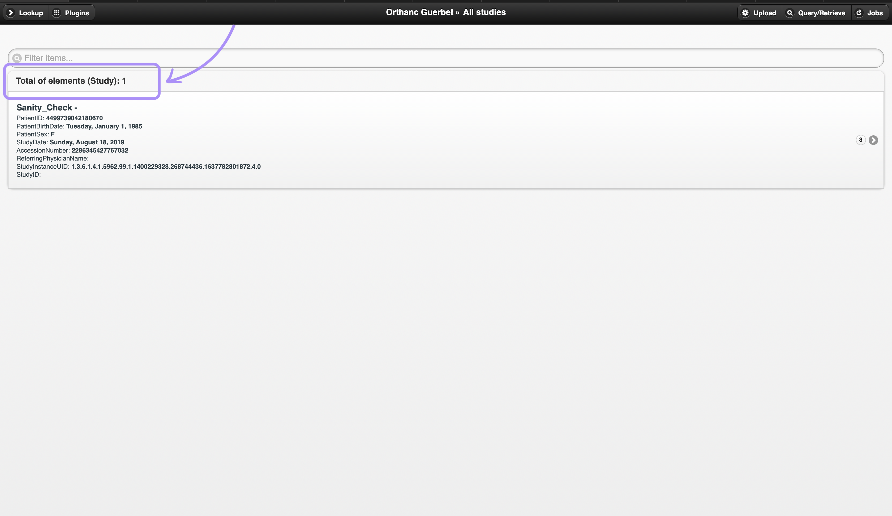
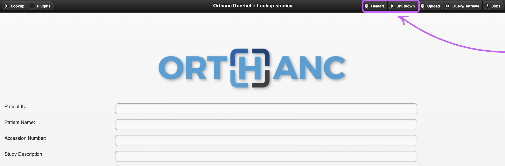
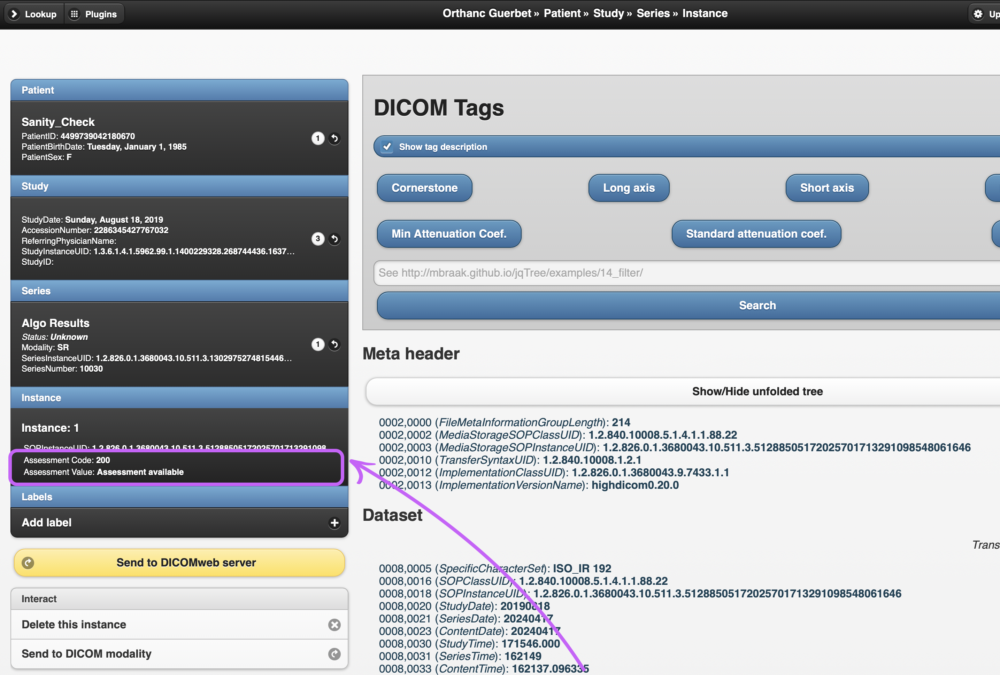

This presentation, crafted in reveal.js, allows you to navigate it using the navigation controls at the bottom right of your screen or your keyboard arrows. Discover my role in the development of the Orthanc interface and the impactful projects I contributed to during my internship at Guerbet Groupe.
Orthanc aims at providing a simple, yet powerful standalone DICOM server. It is designed to improve the DICOM flows in hospitals and to support research about the automated analysis of medical images. Orthanc lets its users focus on the content of the DICOM files, hiding the complexity of the DICOM format and of the DICOM protocol. What makes Orthanc unique is the fact that it provides a RESTful API. Thanks to this major feature, it is possible to drive Orthanc from any computer language. The DICOM tags of the stored medical images can be downloaded in the JSON file format. Furthermore, standard PNG images can be generated on-the-fly from the DICOM instances by Orthanc.
Know more about Orthanc
The FormatListOfStudies function is designed to format and display a list of medical imaging studies, series, or instances in a specified target HTML element. It handles different types of data (Study, Series, Instance) and updates the UI with the formatted list, while managing alerts and counts.

function FormatListOfStudies(targetId, alertId, countId, studies) {
var elementsType = "";
// Determine the type of elements in the studies array
if ((studies.length > 0) && ('Type' in studies[0])) {
elementsType = studies[0]['Type']
}
var target = $(targetId);
var patient, study, s;
var count, showAlert;
$('li', target).remove();
// Display the total number of studies
$("#counter-std").html("Total of studies:"+studies.length );
$("#counter-std").css("padding", "10px 15px 0px");
console.log(studies.length);
if (elementsType == 'Study') {
// Format study labels
for (var i = 0; i < studies.length; i++) {
patient = GetMainDicomTag(studies[i].PatientMainDicomTags, PATIENT_NAME);
study = GetMainDicomTag(studies[i].MainDicomTags, STUDY_DESCRIPTION);
s = "";
if (typeof patient === 'string') {
s = patient;
}
if (typeof study === 'string') {
if (s.length > 0) {
s += ' - ';
}
s += study;
}
studies[i]['Label'] = s;
}
// Sort studies by label
Sort(studies, function(a) { return a.Label }, false, false);
// Determine the number of studies to display and whether to show an alert
if (studies.length <= LIMIT_RESOURCES) {
count = studies.length;
showAlert = false;
} else {
count = LIMIT_RESOURCES;
showAlert = true;
}
// Append formatted studies to the target element
for (var i = 0; i < count; i++) {
s = FormatStudy(studies[i], '#study?uuid=' + studies[i].ID, false, true);
target.append(s);
}
// Refresh the list view to display the new items
target.listview('refresh');
} else if (elementsType == 'Series') {
// Format series and instance elements
for (var i = 0; i < count; i++) {
s = FormatSeries(studies[i], '#series?uuid=' + studies[i].ID, false, true);
target.append(s);
}
} else if (elementsType == 'Instance') {
for (var i = 0; i < count; i++) {
s = FormatInstance(studies[i], '#instance?uuid=' + studies[i].ID, false, true);
target.append(s);
}
}
// Show or hide the alert based on the number of items displayed
if (showAlert) {
$(countId).text(LIMIT_RESOURCES);
$(alertId).show();
} else {
$(alertId).hide();
}
}
// Show the lookup container and Update the counter with the total number of studies
$('#lookup-result').show();
$("#counter-lookup").html("Total of studies:"+studies.length );
// ajax call to get the data
$('#find-studies').live('pagebeforeshow', function() {
GetResource('/studies?expand&since=0&limit=' + (LIMIT_RESOURCES + 1) + '&full', function(studies) {
FormatListOfElements('#all-studies', '#alert-studies', '#count-studies', studies);
});
});
These functions facilitate the controlled restart and shutdown of the Orthanc server through AJAX requests, ensuring that server operations can be smoothly managed and reloaded when necessary.

function TriggerRestart() {
console.log("Restarting Orthanc server");
$.ajax({
url: '../tools/reset',
type: 'POST',
async: false,
cache: false,
complete: function(s) {
window.location.reload();
}
});
}
$('#restart').live('click', function() {
TriggerRestart();
});
function TriggerShutdown() {
console.log("Shutdown Orthanc server");
$.ajax({
url: '../tools/shutdown',
type: 'POST',
async: false,
cache: false,
complete: function(s) {
window.location.reload();
}
});
}
$('#shutdown').live('click', function() {
TriggerShutdown();
});
HTML:
Restart
Shutdown
This code initializes and configures tree views for DICOM data in the Orthanc application, providing search functionality to highlight and open matching nodes.
// Initialize the document when ready
$(document).ready(function() {
var foundMatch = true;
var trees = ['#dicom-tree', '#dicom-metaheader'];
// Iterate over each tree element and initialize the tree
for (var i = 0; i < trees.length; i++) {
$(trees[i]).tree({
autoEscape: false, // Disable auto-escaping of HTML content
onCreateLi: (node, $el) => {
// Hide nodes that don't match the search
if (foundMatch && !node.openForMatch && !node.parent.matches) {
$el.addClass("hidden-node");
}
// Highlight nodes that match the search
if (node.matches) {
$el.addClass("highlight-node");
if (node.deleteme) {
console.debug("onCreateLi - node.deleteme");
$el.addClass("found-term");
}
}
}
});
}
});
// Search functionality triggered by a button click
$("#search").live("click", () => {
const searchTerm = $("#search-term").val().toLowerCase();
const tree = $("#dicom-tree").tree("getTree");
// If search term is empty, remove highlights and hidden nodes
if (searchTerm.length == 0) {
tree.iterate((node) => {
delete node.deleteme;
delete node.matches;
delete node.openForMatch;
return true;
});
$("li").removeClass("hidden-node").removeClass("highlight-node").removeClass("found-term");
return;
}
// Search through the tree and mark matching nodes
tree.iterate((node) => {
node.openForMatch = false;
if (node.name && node.name.toLowerCase().includes(searchTerm)) {
node.deleteme = true;
node.matches = true;
let parent = node.parent;
while (parent) {
parent.openForMatch = true;
parent = parent.parent;
}
} else {
delete node.deleteme;
delete node.matches;
}
return true;
});
// Open matching nodes and hide others
tree.iterate((node) => {
if (node.openForMatch) {
$("#dicom-tree").tree("openNode", node, false);
} else if (!node.matches) {
delete node.deleteme;
$("#dicom-tree").tree("closeNode", node, false);
}
return true;
});
// Apply CSS classes to highlight matches and hide non-matches
$("li").each(function () {
const nodeId = $(this).data("id");
const node = tree.getNodeById(nodeId);
if (node) {
$(this).toggleClass("hidden-node", !node.openForMatch && !node.parent.matches);
$(this).toggleClass("highlight-node", node.matches);
$(this).toggleClass("found-term", node.deleteme);
}
});
});
HTML:
Search
The RefreshInstance function is designed to retrieve comprehensive details about a DICOM instance within an Orthanc-based viewer. It initiates a sequence of AJAX requests to fetch and display crucial information related to the instance, including its associated series, study, and patient data. Additionally, it retrieves and processes instance tags from a JSON document, specifically focusing on finding and displaying assessment code values. This function ensures that all pertinent information related to the DICOM instance is updated and displayed dynamically within the user interface, facilitating efficient medical image management and analysis.
function RefreshInstance() {};

function RefreshInstance() {
var pageData;
if ($.mobile.pageData) {
pageData = DeepCopy($.mobile.pageData);
// Fetch data
GetResource('/system', function(system) {
GetResource('/instances/' + pageData.uuid + '?full', function(instance) {
GetResource('/series/' + instance.ParentSeries + '?full', function(series) {
GetResource('/studies/' + series.ParentStudy + '?full', function(study) {
GetResource('/patients/' + study.ParentPatient + '?full', function(patient) {
// Update links with patient, study, and series UUIDs
$('#instance .patient-link').attr('href', '#patient?uuid=' + patient.ID);
$('#instance .study-link').attr('href', '#study?uuid=' + study.ID);
$('#instance .series-link').attr('href', '#series?uuid=' + series.ID);
// Append and format patient, study, series, and instance info
$('#instance-info li').remove();
var info = $('#instance-info')
.append('Patient ')
.append(FormatPatient(patient, '#patient?uuid=' + patient.ID, true))
.append('Study ')
.append(FormatStudy(study, '#study?uuid=' + study.ID, true))
.append('Series ')
.append(FormatSeries(series, '#series?uuid=' + series.ID, true))
.append('Instance ')
.append(FormatInstance(instance));
ConfigureLabels(info, system, 'instances', instance.ID);
info.listview('refresh');
// Fetch and process instance tags
GetResource('/instances/' + instance.ID + '/tags', function(s) {
const tags = $.parseJSON(JSON.stringify(s));
do {
if (!(tags["0008,0070"] &&
(tags["0008,0070"].Name === "Manufacturer") &&
(typeof tags["0008,0070"].Value === 'string') &&
(tags["0008,0070"].Value.toLowerCase() === "guerbet"))) {
console.debug("Cannot find Manufacturer == Guerbet");
break;
}
code_parent_node = findCodeAndDescriptionParent(tags, "0008,0119");
if (isNotObject(code_parent_node)) {
console.warn("'findCodeAndDescriptionParent(tags, \"0008,0119\")' failed");
break;
}
let assessment_code_value = undefined;
let assessment_code_meaning = undefined;
let tag = "0008,0100";
if (!
((tag in code_parent_node) &&
(typeof code_parent_node[tag] === 'object') &&
(code_parent_node[tag] !== null) &&
("Value" in code_parent_node[tag]))) {
console.error("Missing assessment code key in found node");
break;
}
assessment_code_value = code_parent_node[tag]["Value"];
tag = "0008,0104";
if (!
((tag in code_parent_node) &&
(typeof code_parent_node[tag] === 'object') &&
(code_parent_node[tag] !== null) &&
("Value" in code_parent_node[tag]))) {
console.error("Missing assessment code key in found node");
break;
}
assessment_code_meaning = code_parent_node[tag]["Value"];
$('.assessmentField').append($('<>').text('Assessment Code: ')
.append($('<>').text( assessment_code_value)))
.append($('<>').text('Assessment Value: ')
.append($('<>').text( assessment_code_meaning)));
} while (0);
$('#dicom-tree').tree('loadData', ConvertForTree(s));
});
// Load instance header data into tree
GetResource('/instances/' + instance.ID + '/header', function(s) {
$('#dicom-metaheader').tree('loadData', ConvertForTree(s));
});
// Fetch and display transfer syntax
$('#transfer-syntax').hide();
GetResource('/instances/' + instance.ID + '/metadata?expand', function(s) {
transferSyntax = s['TransferSyntax'];
if (transferSyntax !== undefined) {
$('#transfer-syntax').show();
$('#transfer-syntax-text').text(transferSyntax);
}
});
// Setup anonymized or modified from links
SetupAnonymizedOrModifiedFrom('#instance-anonymized-from', instance, 'instance', ANONYMIZED_FROM);
SetupAnonymizedOrModifiedFrom('#instance-modified-from', instance, 'instance', MODIFIED_FROM);
// Setup attachments
SetupAttachments('#instance-access', 'instance-attachment', pageData.uuid, 'instances');
currentPage = 'instance';
currentUuid = pageData.uuid;
});
});
});
});
});
}
}
The ChooseGuerbetServer function facilitates the selection of a Guerbet IA server for sending DICOM study data. It retrieves server's urls via an AJAX request GET and dynamically insert a list of available servers categorized by modality. The ConfigureDicomGuerbetClient function is designed to add a button to the DICOM viewer interface, enabling users to send DICOM studies to Guerbet IA servers. When the button is clicked, it handles the submission of study data to the chosen server via an AJAX POST request. Additionally, this function ensures that if a study has already been sent to a selected server, it prompts the user for confirmation before sending it again. This function streamlines the process of selecting a target server and sending DICOM study data to Guerbet IA servers efficiently.
function ChooseGuerbetServer(callback) {
var clickedModality = '';
var clickedServerUrl = '';
var items = $('<>')
.attr('data-divider-theme', 'd')
.attr('data-role', 'listview');
// Fetch server configuration
$.ajax({
url: 'https://localhost:8443/configuration',
type: 'GET',
dataType: 'json',
async: false,
cache: false,
success: function (config) {
var name, url, item;
// Check for Guerbet IA_advisors in configuration
if (config.Guerbet && config.Guerbet.IA_advisors) {
var categories = config.Guerbet.IA_advisors;
for (var category in categories) {
if (categories.hasOwnProperty(category)) {
items.append('< data-role="list-divider">' + category + '');
var servers = categories[category];
servers.forEach(function(server) {
for (var serverName in server) {
if (server.hasOwnProperty(serverName)) {
var name = serverName;
var url = server[serverName].Url;
var item = $('<>')
.html('< href="#" class="serverbtn" rel="close">' + name + '')
.attr('data-url', url)
.click(function () {
clickedModality = $(this).text();
clickedServerUrl = $(this).attr('data-url');
// Confirm if the server has already been used
if (clickedServerUrl === lastSelectedServerUrl) {
$('<>').simpledialog2({
mode: 'button',
headerText: 'Confirmation',
headerClose: true,
buttonPrompt: 'You have already sent this study to selected server of Guerbet IA.<>Are you sure you want to send it again?',
width: 1200,
buttons : {
'Yes': {
click: function () {
callback(clickedModality, clickedServerUrl);
lastSelectedServerUrl = clickedServerUrl;
}
},
'No': {
click: function () { }
}
}
});
} else {
callback(clickedModality, clickedServerUrl);
lastSelectedServerUrl = clickedServerUrl;
}
});
items.append(item);
}
}
});
}
}
}
// Launch the dialog
$(document).simpledialog2({
mode: 'blank',
animate: false,
headerText: 'Choose target',
headerClose: true,
forceInput: false,
width: '100%',
blankContent: items,
callbackClose: function () {
}
});
}
});
}
// Configure DICOM client to send data to Guerbet IA
function ConfigureDicomGuerbetClient(resourceId, buttonId, positionOnPage) {
$('#' + buttonId).remove();
var b = $('<>')
.attr('id', buttonId)
.attr('data-role', 'button')
.attr('href', '#')
.attr('data-icon', 'forward')
.attr('data-theme', 'e')
.text('Send to Guerbet IA')
.button();
b.insertAfter($('#' + positionOnPage));
b.click(function () {
$('ul[data-role="listview"] li').attr('disabled', true).addClass('ui-state-disabled');
// Handle server selection and data submission
ChooseGuerbetServer(function (modality, serverUrl) {
if (serverUrl != null) {
var archive_url = '../studies/' + $.mobile.pageData.uuid + '/archive';
var match = window.location.href.match(/^(https?:\/\/[^/]+)/i);
var uriResponse = match[1];
var formData = new FormData();
formData.append('archive_url', archive_url);
formData.append('uriResponse', uriResponse);
// Submit the study data to the selected server
$.ajax({
url: serverUrl,
type: 'POST',
data: formData,
processData: false,
contentType: false,
success: function (response) {
console.log("Job submitted successfully: ", response);
enableServerButtons();
},
error: function () {
alert('Cannot submit job');
disableServerButtons();
console.log('classadded');
}
});
}
});
});
}
// Initialize the Guerbet IA client for the patient page
$('#patient').live('pagebeforeshow', function () {
ConfigureDicomGuerbetClient($.mobile.pageData.uuid, 'stowe-patient', 'patient-info');
});
// Initialize the Guerbet IA client for the study page
$('#study').live('pagebeforeshow', function () {
ConfigureDicomGuerbetClient($.mobile.pageData.uuid, 'stowe-study', 'study-info');
});
The following functions - CheckValue, DurationTime, and LogStyles - are designed to handle and display log information from a JSON document that has been replaced with a "too long" field. These functions allow for the extraction, formatting, and rendering of detailed log information in a user-friendly manner, including the highlighting of log levels and extraction of specific duration times from log entries.
// Check and handle "Too long" fields in the log data
function CheckValue(node, foundValue) {
// If a node's label indicates a "too long" value, set up a click event handler
if (node.label.includes("Too long")) {
$('#too-long-element').one('click', function() {
if (foundValue) {
LogStyles(foundValue); // Style and display the log
DurationTime(foundValue); // Extract and display duration times
}
});
}
// Recursively check child nodes
if (node.children && node.children.length > 0) {
node.children.forEach(child => CheckValue(child, foundValue));
}
}
// Extract and display duration times from log entries
function DurationTime(foundValue) {
let originalLogLines = foundValue.split("\n");
for (let i = 0; i < originalLogLines.length; i++) {
var durationRegexProstate = /(.{23}) \| (\w+) +\| (.*:\d+) - Step #\d+\/\d+: execute_prostate_gland_segmentation_ duration time( \d+\.\d+ seconds)/;
var durationRegex = /(.{23}) \| (\w+) +\| (.*:\d+) - Step #\d+\/\d+: execute_lesions_detection_ duration time( \d+\.\d+ seconds)/;
// Check for prostate segmentation duration
if (originalLogLines[i].includes("execute_lesions_detection_ duration time")) {
let durationMatch = originalLogLines[i].match(durationRegex);
if (durationMatch) {
$('.assessmentField').append($('<p>').text('Execute lesions detection duration time:')
.append($('<strong>').text(durationMatch[4])))
}
}
// Check for lesions detection duration
if (originalLogLines[i].includes("execute_prostate_gland_segmentation_ duration time")) {
let durationMatchProstate = originalLogLines[i].match(durationRegexProstate);
if (durationMatchProstate) {
$('.assessmentField').append($('<p>').text('Execute prostate segmentation duration time:')
.append($('<strong>').text(durationMatchProstate[4])))
}
}
}
}
// Style and display log entries with appropriate highlights
function LogStyles(foundValue) {
let originalLogLines = foundValue.split("\n");
const regex = /^(.{23}) \| (\w+) +\| (.*:\d+) - (.*)$/;
let fullLog = "";
for (let i = 0; i < originalLogLines.length; i++) {
let result = regex.exec(originalLogLines[i]);
// If no result could be captured AND NOT the expected number of captured groups, just return as is
if (!((result !== null) && (result.length == 5))) {
fullLog += (originalLogLines[i] + '<br>');
continue;
}
// Determine the log level class for styling
let logLevelClass = 'log-highlight';
switch (result[2]) {
case 'DEBUG':
logLevelClass = 'debug-highlight';
break;
case 'INFO':
logLevelClass = 'info-highlight';
break;
case 'WARNING':
logLevelClass = 'warning-highlight';
break;
case 'ERROR':
logLevelClass = 'error-highlight';
break;
case 'CRITICAL':
logLevelClass = 'critical-highlight';
break;
case 'SUCCESS':
logLevelClass = 'success-highlight';
break;
}
// Replace log components with styled spans
let newLine = originalLogLines[i]
.replace(result[1], `<span class="date-highlight">${result[1]}</span>`)
.replace(result[2], `<span class="${logLevelClass}">${result[2]}</span>`)
.replace(result[3], `<span class="module-highlight">${result[3]}</span>`)
.replace(result[4], `<span class="${logLevelClass}">${result[4]}</span><br>)
fullLog += newLine;
}
// Display the styled log
$('#log-content').html(fullLog);
$('#log-block').show();
// Add scroll-to-bottom functionality to the log display
let btnscroll = document.querySelector('#scroll-btn');
let logBlock = document.querySelector('#log-block');
btnscroll.addEventListener('click', e => {
logBlock.scrollIntoView({
behavior: 'smooth',
block: 'end'
});
});
};
CSS
#log-content {
color: rgb(204, 204, 204);
background-color: #000000;
padding: 20px;
text-shadow: none;
font-family: "DM Mono", monospace;
font-weight: 500;
font-style: normal;
font-size: 14px;
margin: auto;
width: 95%;
overflow-x: auto;
white-space: pre;
}
.date-highlight {
color: rgb(22, 187, 123);
}
.info-highlight {
color: rgb(204, 204, 204);
}
.debug-highlight {
color: rgb(63, 140, 231);
}
.warning-highlight {
color: rgb(245, 246, 84);
}
.error-highlight {
color: rgb(240, 81, 81);
}
.critical-highlight {
color: rgb(240, 240, 420);
background-color: rgb(204, 55, 55);
}
.success-highlight {
color: rgb(40, 208, 140);
}
.module-highlight {
color: rgb(27, 167, 203);
}
.log-highlight {
color: rgb(204, 204, 204);
}
.ui-content{
margin-top: 40px;
}
This Python Flask server is designed to handle STOW (Store Over the Web) requests, specifically for the Orthanc Explorer application. The server accepts POST requests to store DICOM files, generates unique filenames for the files, and responds with a JSON payload containing metadata.
from flask import Flask, request, jsonify
from flask_cors import CORS, cross_origin
import uuid
app = Flask(__name__)
@app.route('/')
def home():
return jsonify({'message': 'Welcome to the Orthanc Explorer'})
@app.route('/GUERBETWEB_ROOT/servers/stow', methods=['POST', 'OPTIONS'])
@cross_origin(origin='http://localhost:8088',
methods=['POST'], # Allow POST requests
allow_headers=['Content-Type']) # Allow Content-Type header
def handle_stow_request():
if request.method == 'POST':
try:
files = request.files.getlist('file')
for file in files:
# Generate unique filename
filename = str(uuid.uuid4()) + '.dcm'
file.save(filename)
# Extract the full URL and resourceId from the form data
archive_url = request.form.get('archive_url', '')
uriResponse=request.form.get('uriResponse','')
# Return JSON response with success status, full URL, and resourceId
response_data = {
"algorithmGroupId": "",
"applicationPackage": "PRAIA",
"applicationPackageTransactionId": "",
"applicationPackageVersion": "1.0",
"currentPayload": [
{
"dataReference": {
"artifactId": "",
"file": "",
"uri": archive_url,
"uriNotifications": "http://localhost:8043",
"uriResponse": uriResponse,
},
"models": {} ,
}
],
"currentTransactionId": "",
"executionPayload": {},
"insights": {},
"observationList": [],
"parentIds": [],
"patientInternalId": "",
"payloadType": "IMAGE",
"priority": "NORMAL",
"priorsPayload": [],
"rawData": [],
"tenantNamespace": ""
}
return jsonify(response_data), 200
except Exception as e:
print("Error processing request:", str(e))
return jsonify({'error': 'An error occurred'}), 500
elif request.method == 'OPTIONS':
return '', 200
if __name__ == '__main__':
app.run(debug=True)